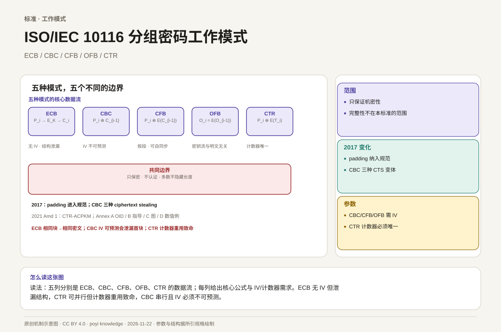
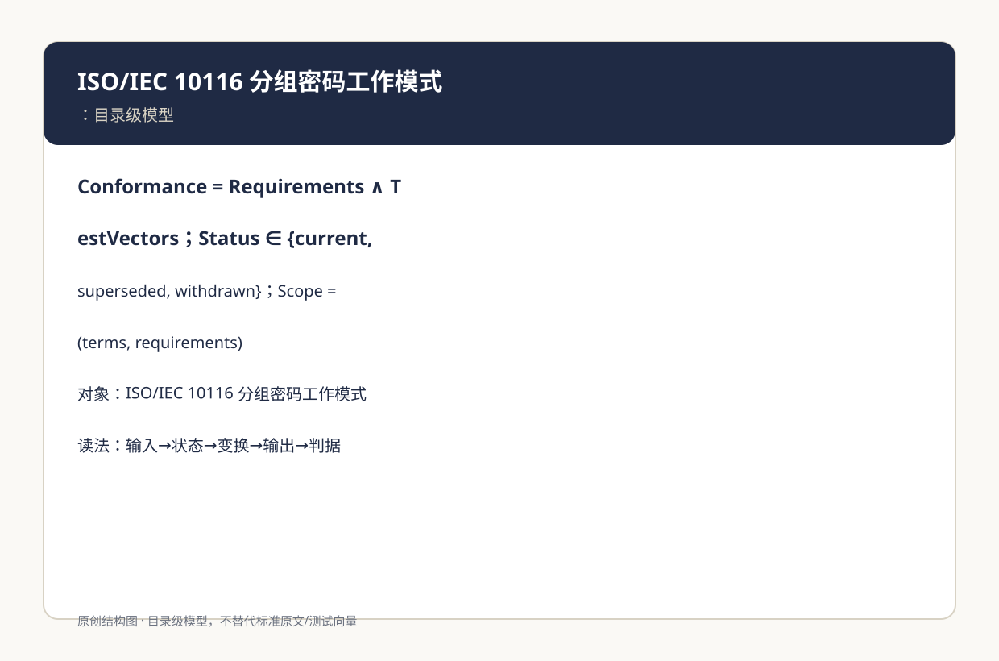

原理与机制
标准：ISO/IEC 10116 分组密码工作模式（ISO/IEC 10116 modes of operation for an n-bit block cipher）。### 五种模式
ISO/IEC 10116:2017 规定五种以 n 位分组密码为基础的工作模式：ECB、CBC、CFB、OFB、CTR。ECB 逐块独立加密；CBC 把前一块密文异或进下一块明文；CFB 用密文反馈产生密钥流；OFB 用输出反馈产生密钥流；CTR 对计数器加密后与明文异或。### 关键公式
CBC 加密为 C_i = E_K(P_i ⊕ C_{i-1})，C_0 = IV；CFB 为 C_i = P_i ⊕ E_K(C_{i-1})（按 s 位段实施）；OFB 为 O_i = E_K(O_{i-1})，C_i = P_i ⊕ O_i；CTR 为 C_i = P_i ⊕ E_K(T_i)，计数器每块递增。ECB 没有 IV，CBC/CFB/OFB 需要初始向量，CTR 需要唯一计数器。

为什么重要
ECB 确定、可并行，但相同明文块产生相同密文块，泄露结构；CBC 隐藏结构但串行、对 IV 可预测性敏感；CFB 适合按段处理且能自同步；OFB 生成与明文无关的密钥流，适合噪声信道；CTR 可并行、可随机访问，但计数器重用会灾难性泄密。### 2017 版的工程修正
第四版把 padding 纳入规范范围，并为 CBC/CFB/OFB/CTR 增加避免密文扩张的方法；CBC 还给出三种 ciphertext stealing 变体。这样，标准不再假设“明文长度一定是分组的整数倍”，更贴近存储和网络实现。
应用与实例
ISO/IEC 10116 是分组密码模式的基础标准，Annex A 给出对象标识符，Annex B 给出安全指导，Annex C 是图，Annex D 是数值例子。它常与 ISO/IEC 9797-1（MAC）和 ISO/IEC 18033-3（分组密码）配套使用。### 实现选择
磁盘/文件加密常用 CBC + ESSIV 或 XTS（XTS 在 IEEE 1619，不在 10116）；网络协议常用 CTR + 认证；数据库可用 CBC 或 CTR，但必须另加 MAC/AEAD。选择模式时先确定长度处理、并行性、随机访问和错误传播，再谈算法。

边界与攻击面
标准明确：这些模式只提供机密性，完整性不在范围内；多数模式也不隐藏消息长度。ECB 的结构泄漏、CBC 的 padding oracle、CTR 的计数器重用都能直接破坏安全。不要把 10116 的模式当成认证加密。### 参数错误比算法更致命
CBC 的 IV 必须不可预测（通常随机），不能复用；CTR 的计数器在同一密钥下不能重复，否则两条密钥流异或即泄露明文；OFB/CFB 的 IV 也要唯一。实现还要处理短块、末块、长度扩张和密钥轮换，否则标准条文正确也可能被误用。
历史与背景
ISO/IEC 10116 首版在 1991 年，1997、2006 年修订，2017 年第四版把 padding 与避免扩张方法纳入规范。2021 年 Amendment 1 增加 CTR-ACPKM 模式，用于密钥定期更新的场景。### 与 NIST SP 800-38 系列并行
NIST 的 SP 800-38A 定义 ECB/CBC/CFB/OFB/CTR，SP 800-38B 定义 CMAC，SP 800-38D 定义 GCM，SP 800-38E 定义 XTS。ISO 10116 与它们在模式集合上高度重叠，但条款、OID 与附录不同；工程实现常同时满足两套标准。
技术参数与复算边界
该条目的形式模型是 (S=\min_i S_i,\quad S_i\in{\text{密钥强度},\text{分组安全},\text{实现安全}})。输入：输入：ISO/IEC 10116 分组密码工作模式的公开参数、密钥/随机数与消息；变量说明：S 为综合安全强度；各分量取最小值，不能只看密钥位数。 预期输出：按 ISO/IEC 10116 分组密码工作模式 的规范执行后得到可验证的输出或可比较的优势界。 复算必须给出输入、步骤、输出和单位；示例只演示流程，不替代标准测试向量。
复杂度由密钥长度、分组/状态规模、轮数、随机数质量和敌手模型共同决定；参数越界、版本差异与实现侧信道都可能使公式结论失效。已登记限制：该条目只给出形式模型与可复算步骤，不声称已完成生产实现、侧信道认证或第三方安全评估。
逐步示例与核验
形式模型与复算步骤
[S=\min_i S_i,\quad S_i\in{\text{密钥强度},\text{分组安全},\text{实现安全}}]
ISO/IEC 10116 分组密码工作模式的公开参数、密钥/随机数与消息；变量说明：S 为综合安全强度；各分量取最小值，不能只看密钥位数。1.读取标准规定的密钥/分组/模式参数。2.按标准表换算等效强度。3.取最弱分量作为系统强度。边界：公式只覆盖已登记的参数与假设；参数取值、标准版本和实现细节仍以来源为准。
参考出处
- Wikipedia search entry for ISO/IEC 10116 分组密码工作模式. https://zh.wikipedia.org/w/index.php?search=ISO%2FIEC%2010116%20%E5%88%86%E7%BB%84%E5%AF%86%E7%A0%81%E5%B7%A5%E4%BD%9C%E6%A8%A1%E5%BC%8F
- Handbook of Applied Cryptography (Menezes, van Oorschot, Vanstone). https://www.cacr.math.uwaterloo.ca/hac/